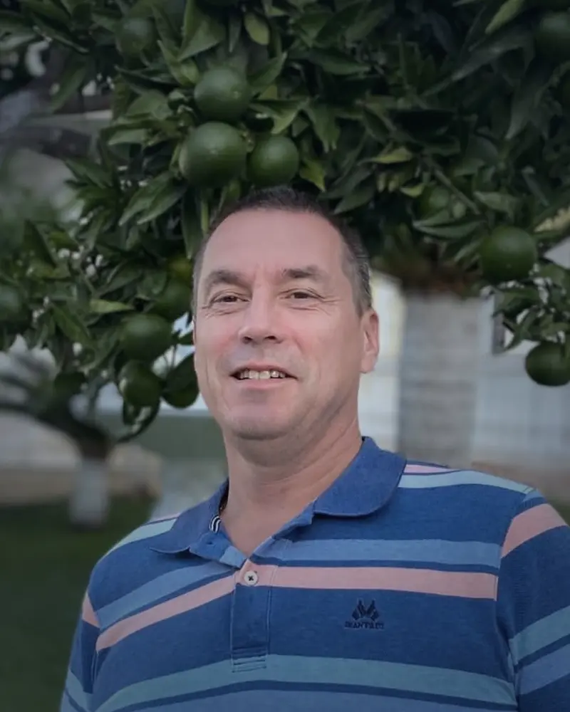
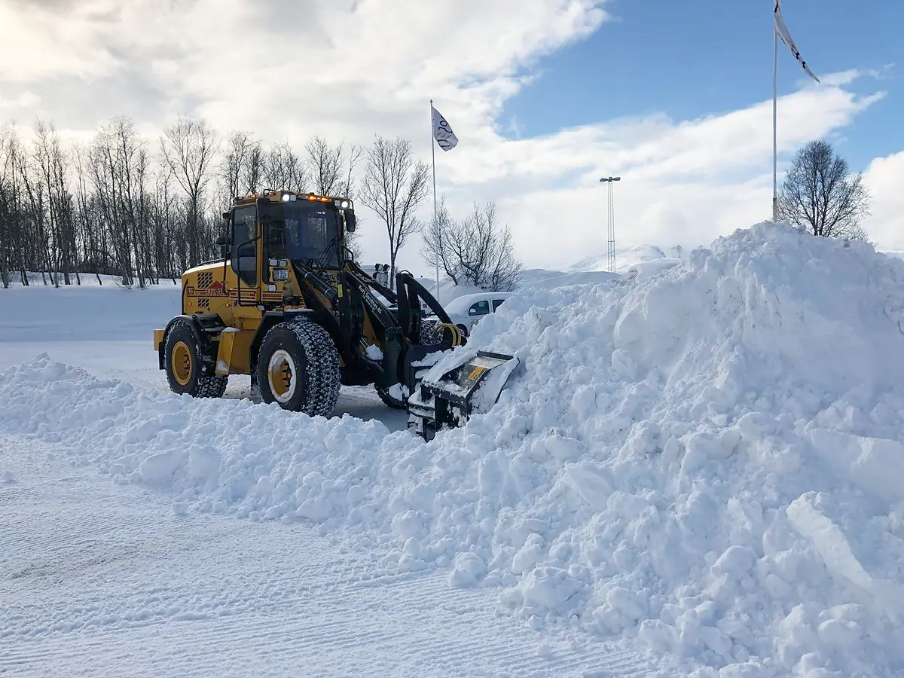
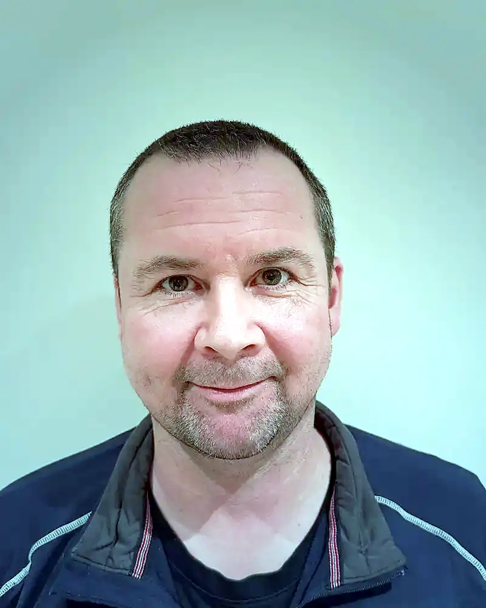
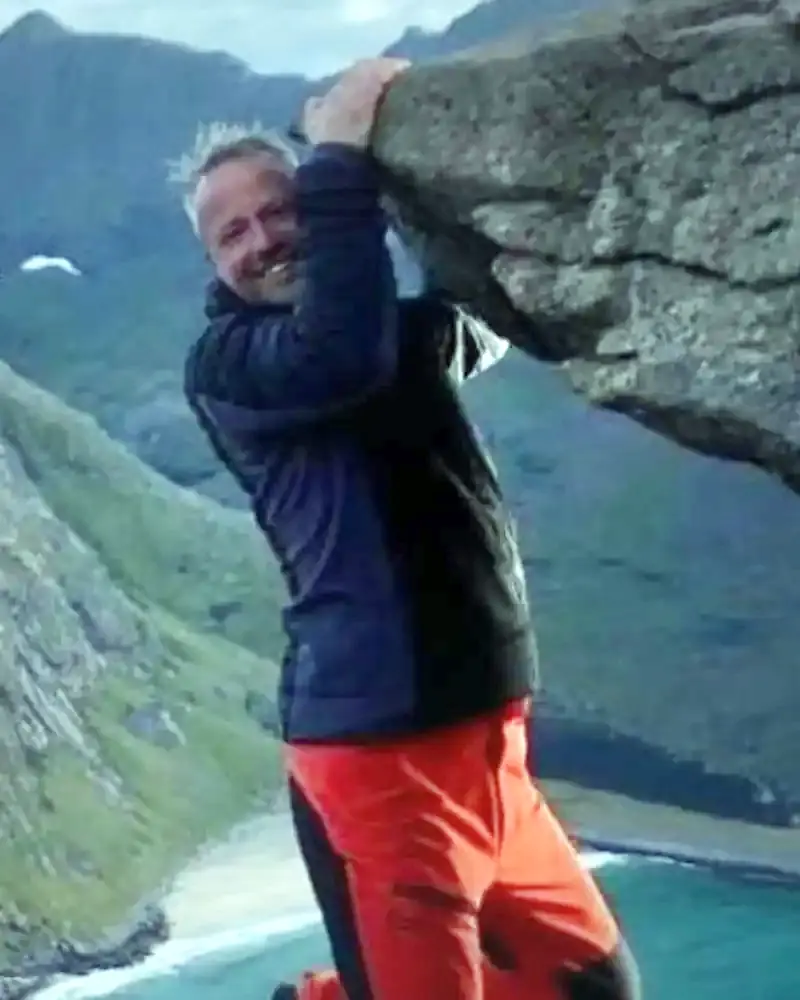
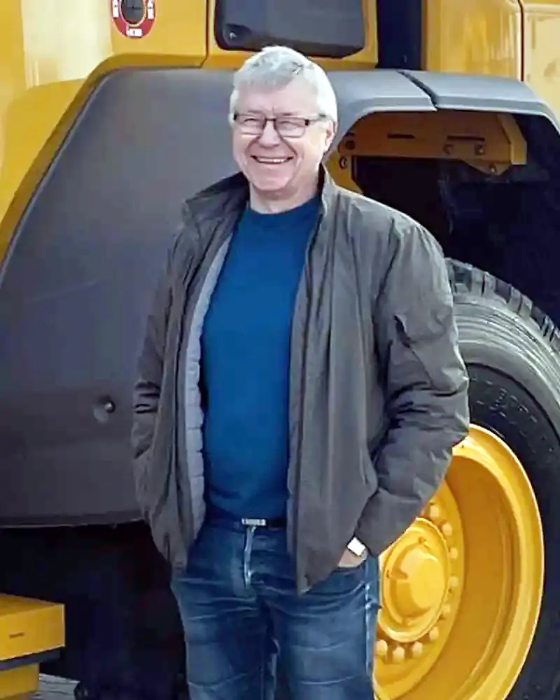
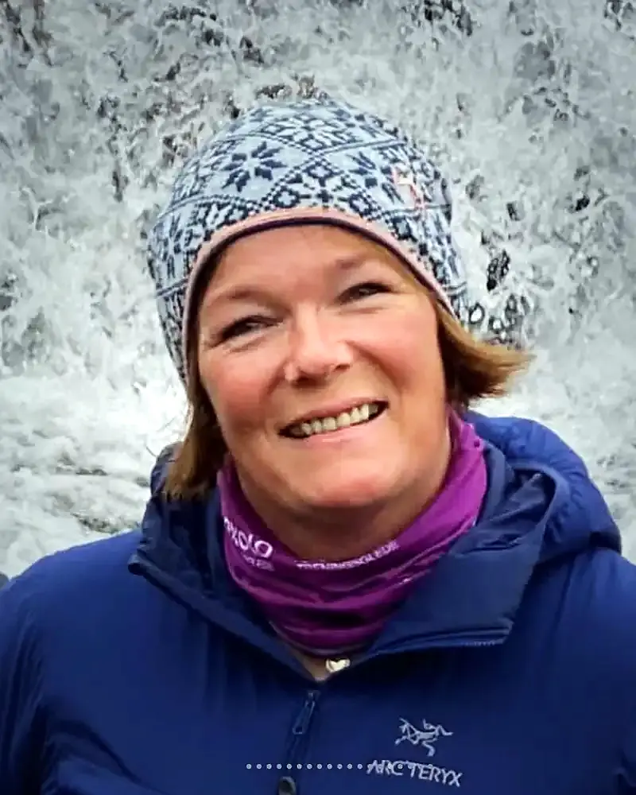
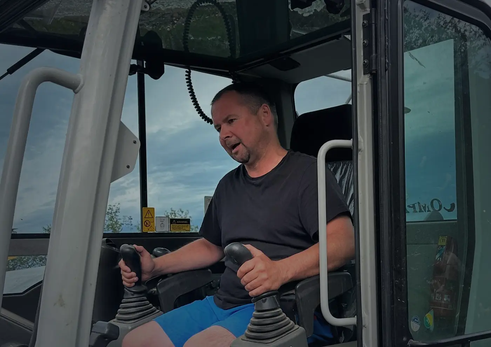

Gründer, maskinfører og daglig lederFounder, operator and managing director
Kurt Sandnes
Har drevet firmaet siden 1997. Det er ham du snakker med når du ringer.Has run the company since 1997. He is the one you talk to when you call.

Maskinentreprenør Kurt Sandnes ASBrøyting · Tromsø · siden 1997Snow clearing · Tromsø · since 1997
Om oss · 1997–2027About · 1997–2027
I mars 1997 startet Kurt Sandnes for seg selv, med én gravemaskin, seg selv og én sesongansatt hjelpemann. Senere ble enkeltpersonforetaket til aksjeselskapet Maskinentreprenør Kurt Sandnes AS.In March 1997, Kurt Sandnes started on his own with one excavator, himself and one seasonal helper. The sole proprietorship later became the limited company Maskinentreprenør Kurt Sandnes AS.
Hovedfokus har alltid vært vinterdrift. Om sommeren tar vi drenering, planering og små tomter.Winter work has always been the main focus. In summer we take on drainage, levelling and small plots.
Brøyting går også i arv. Kurts far, Tor-Egil Sandnes, brøytet for borettslagene på Håpet fra 1975, og kjørte for SAS og Braathens frakt på 70- og 80-tallet.Snow clearing runs in the family. Kurt’s father cleared snow for the housing co-ops at Håpet from 1975 and worked for SAS and Braathens cargo in the 70s and 80s.
Folkene våreOur people

Gründer, maskinfører og daglig lederFounder, operator and managing director
Har drevet firmaet siden 1997. Det er ham du snakker med når du ringer.Has run the company since 1997. He is the one you talk to when you call.

Nestkommanderende · maskinførerSecond in command · operator
Med oss siden 2012. Gravemaskin, hjullaster og lastebil.With us since 2012. Excavator, wheel loader and truck.

MaskinførerOperator
Maskinfører med mekanikerbakgrunn.Operator with a mechanic’s background.

Maskinfører · super-reserveOperator · super reserve
Pensjonist på papiret. Når snøen laver ned, er Geir klar.Retired on paper. When the snow pours down, Geir is ready.

HR og verneombudHR and safety representative
Passer på at alle kommer trygt hjem.Makes sure everyone gets home safely.

KontaktContact
Fortell oss hva du trenger, så avtaler vi en befaring.Tell us what you need and we will arrange a site visit.